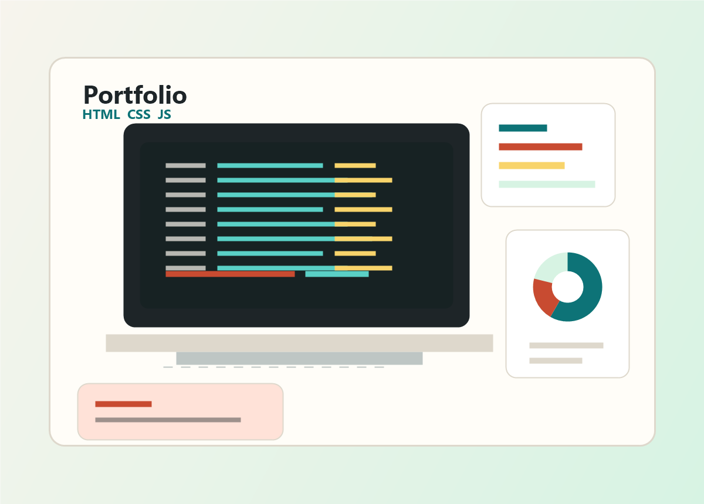

HTML e CSS
Estrutura semântica, estilização responsiva e páginas web bem organizadas.
ADS na FATEC | Estágio em TI
Sou estudante de Análise e Desenvolvimento de Sistemas na FATEC e busco minha primeira oportunidade de estágio em Tecnologia da Informação. Tenho interesse em desenvolvimento web, análise de dados e suporte técnico.

Perfil
Tenho conhecimentos em desenvolvimento web, programação, análise de dados, Excel e lógica de programação. Estou sempre buscando aprender com a prática, fortalecer minha base técnica e contribuir com equipes que valorizam evolução, colaboração e melhoria contínua.
Habilidades
Estrutura semântica, estilização responsiva e páginas web bem organizadas.
Interações, validações, jogos, sorteios e lógica de carrinho.
Formação em aplicações web modernas com componentes e estado.
Lógica de programação, scripts e estudos em data science.
Base em estatística, Excel e interpretação de informações.
Construção de soluções com raciocínio estruturado e clareza.
Organização, colaboração e melhoria contínua no desenvolvimento.
Projetos
CSS · JavaScript · HTML
Loja virtual com vitrine de produtos, filtros, carrinho e resumo do pedido.
Ver no GitHubJavaScript
Jogo Pong com menu, seleção de modo, pausa, colisões, placar e efeitos de partículas.
CSS · HTML · JavaScript
Aplicação para cadastrar participantes, embaralhar nomes e gerar o sorteio.
CSS · HTML · JavaScript
Carrinho com seleção de produtos, quantidade, cálculo por item e total geral.
Python
Aplicação de terminal para cadastrar restaurantes, listar dados e alternar o estado de atividade.
Ver no GitHubCSS · HTML · JavaScript
Sistema de compra de ingressos com controle de disponibilidade por tipo de setor.
CSS · HTML · JavaScript
Interface para gerenciar aluguel de boardgames e alternar status entre disponível e alugado.
CSS · HTML · JavaScript
Sorteador com definição de quantidade, intervalo e geração sem repetir números.
HTML · JavaScript · CSS
Jogo de adivinhação com número aleatório, tentativas e mensagens dinâmicas na tela.
Contato
Estou em busca da minha primeira oportunidade de estágio em TI. Você pode me chamar por email, telefone ou acompanhar meus projetos no GitHub.